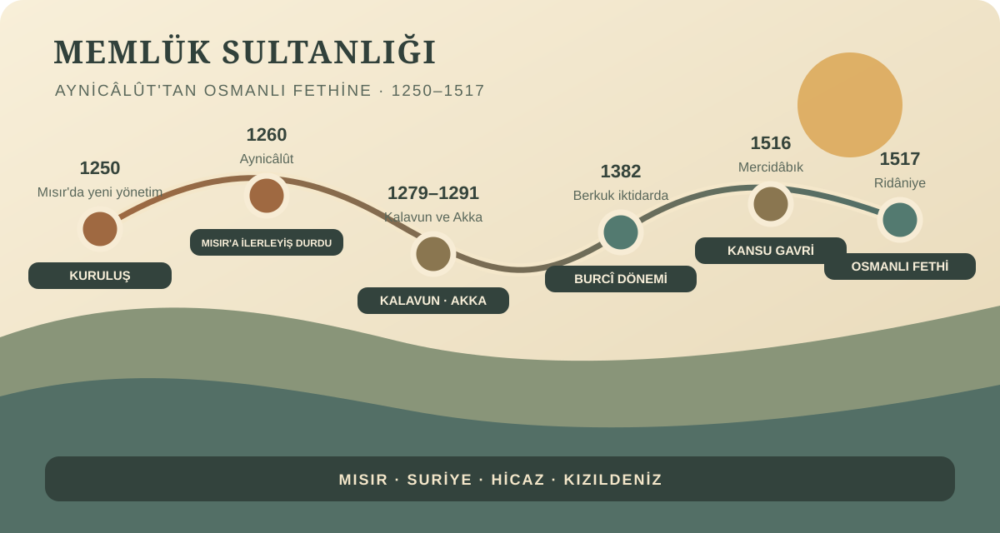

Memlük Sultanlığı, Mısır ve Suriye’de askerî kölelik düzeni içinden yükselen emirlerin kurduğu ve 1250’den 1517’ye uzanan bir devletti. Aynicâlût’ta Moğol kuvvetlerini yenmesi kadar, Kahire merkezli idaresi, Akdeniz ve Kızıldeniz ticareti, Haçlı yönetimleriyle mücadelesi ve Osmanlılarla karşılaşması da tarihini şekillendirdi. “Memlük” tek bir halkı değil, değişen dönemlerde farklı kökenlerden gelen askerî ve siyasi seçkinleri anlatır.[1]
1250: Eyyûbî ordusundan sultanlığa
Memlük adı, Arapça “mülkiyet altındaki kişi” anlamına gelen bir sözcükten gelir. Eyyûbî hükümdarları, özellikle Kıpçak bozkırları ve Kafkasya’dan getirilen gençleri askerî eğitimle yetiştirerek ordularında görevlendiriyordu. Bu askerler zamanla kendi emirlik ağlarını ve siyasi nüfuzlarını kurdular. Mısır’daki Bahrî birlikleri, Eyyûbî Sultanı es-Sâlih Eyyûb döneminde ordunun önemli unsurlarından biri hâline gelmişti.[1]
Fransa Kralı IX. Louis’nin Mısır seferi sırasında es-Sâlih Eyyûb öldü. Eşi Şecerüddür kısa süre yönetimi üstlendi; ardından Eyyûbî hanedanından Turanşah’ın öldürülmesi ve emirler arasındaki mücadele yeni bir iktidar düzeninin önünü açtı. Şecerüddür’ün tahttan çekilmesinden sonra İzzeddin Aybek sultan oldu. Bu geçiş, tek bir günde tamamlanan düzenli bir hanedan değişiminden çok, Haçlı ordularıyla savaşın ve Mısır’daki güç mücadelesinin iç içe geçtiği bir süreçti.[1]
Aynicâlût: Moğol tehdidi ve Mısır’ın savunulması
Hülegü’nün orduları 1258’de Bağdat’ı aldıktan sonra Suriye’ye ilerledi. Moğol ordusunun ana kuvvetlerinin bir bölümü, Büyük Han Möngke’nin ölümünün ardından doğuya dönerken Kitbuğa’nın komutasındaki kuvvetler bölgede kaldı. Memlük Sultanı Kutuz ve komutan Baybars’ın yer aldığı ordu, 1260’ta Filistin’deki Aynicâlût’ta Moğolları yenilgiye uğrattı. Bu sonuç Moğol gücünü ortadan kaldırmadı; Mısır’a doğru ilerleyişi durdurdu ve Suriye’de yeni bir rekabet dönemini başlattı.[2][4]
Zaferden sonra Kahire’ye dönüş yolunda Sultan Kutuz öldürüldü ve Baybars tahta çıktı. Bu olay, Memlük yönetiminin yalnızca dış savaşlarla değil, emirlerin kendi aralarındaki rekabetle de şekillendiğini gösterir. Moğolların Bağdat seferi ve Aynicâlût’un daha geniş bağlamı için Moğol İmparatorluğu yazımıza bakabilirsiniz.
Baybars: askerî başarıdan devlet örgütlenmesine
Baybars’ın 1260–1277 arasındaki saltanatı, Memlük iktidarının Mısır’ın ötesinde Suriye’ye ve Hicaz’a uzanan bir güç hâline gelmesinde etkili oldu. İlhanlılarla mücadele ederken Haçlı yönetimlerine karşı da seferler düzenledi; 1268’de Antakya’yı aldı. Baybars, yalnızca savaş alanındaki başarısıyla değil, yönetim ve haberleşme ağlarını güçlendirmesiyle de hatırlanır. Bağdat Abbâsî hilâfetinin sona ermesinden sonra Kahire’de bir Abbâsî halifeyi himayesine alması, sultanlığın meşruiyet arayışının parçasıydı.[3]
Aynicâlût’tan sonra Memlük-İlhanlı çatışması bitmedi; sınır seferleri ve diplomatik ilişkiler onlarca yıl sürdü. Baybars’ın Altın Orda ile kurduğu temaslar da bu mücadelenin yalnızca iki ordu arasındaki bir savaş olmadığını gösterir. Aynı dönemde Akka ve diğer Haçlı merkezleriyle mücadele, ittifaklar ve ateşkesler arasında değişen bir seyir izledi.[3][4]
Kalavun, el-Eşref Halil ve Akka’nın alınışı
Baybars’ın ardından taht mücadeleleri sürdü. 1279’da iktidara gelen Kalavun, Memlük emirleri arasındaki dengeleri yönetirken İlhanlılarla ve Haçlı güçleriyle karşı karşıya kaldı. 1289’da Trablus’u ele geçirmesi, Doğu Akdeniz kıyısındaki Haçlı varlığını daha da daralttı. Kalavun’un oğlu el-Eşref Halil, 1291’de Akka’yı aldı. Akka’nın düşüşü Levant ana karasındaki başlıca Haçlı yönetimlerinin sonunu getirdi; fakat Haçlı seferleri düşüncesi ve Akdeniz’deki siyasi ilişkiler bir anda sona ermedi.[5][8] Bu dönemin daha geniş bağlamı için Haçlı Seferleri yazımıza bakabilirsiniz.
Kahire’de yönetim, toplum ve gündelik hayat
Memlük sultanlığı, modern anlamda tek bir etnik topluluğun devleti değildi. Saray ve ordu çevresindeki askerî seçkinler, farklı bölgelerden gelen memlükler ile yerel emir ailelerinin ittifakları ve rekabetleri içinde yükseliyordu. Tahtın çoğu zaman babadan oğula kendiliğinden geçmemesi, siyaseti öngörülemez kılabiliyordu; buna rağmen bazı sultan aileleri, özellikle Kalavun’un soyundan gelenler, birkaç kuşak boyunca iktidarda etkili oldu.[1]
Kahire, saray ve kışlaların bulunduğu bir başkent olmanın yanı sıra Kızıldeniz, Akdeniz ve Suriye yollarının kesiştiği büyük bir ticaret ve kültür merkeziydi. Medreseler, camiler, çarşılar ve vakıflar şehrin görünümünü ve toplumsal hayatını şekillendirdi. Memlük mimarisi ve himaye kültürü, dönemin siyasi gücünün şehir mekânına nasıl yansıdığını gösterir; bu tarih yalnızca savaşların kronolojisinden ibaret değildir.[6]
1382’de Berkuk’un iktidara gelişiyle kaynaklarda Burcî Memlükleri adı verilen dönem başladı. Bu ad değişimi, devletin bir anda başka bir topluma dönüşmesi değil; askerî elitler ve iktidar ağları içindeki yeni bir yapılanmaydı. 14. ve 15. yüzyıllarda salgınlar, bölgesel mücadeleler ve ekonomik baskılar yönetimi zorladı; yine de sultanlık Doğu Akdeniz’in başlıca güçlerinden biri olmayı sürdürdü.[1][6]
1516–1517: Osmanlı fethi ve Memlüklerin mirası
Osmanlı-Memlük rekabeti, 1516’da Mercidâbık’ta yapılan savaşta Sultan Kansu Gavri’nin yenilmesiyle belirleyici bir aşamaya ulaştı. Yeni sultan Tomanbay, Mısır’ı savunmaya çalıştı; ancak 1517’de Kahire yakınlarındaki Ridâniye’de Osmanlı ordusuna yenildi. Kahire’nin alınması Memlük Sultanlığı’nı sona erdirdi. Bu gelişme tek bir meydan savaşından ibaret değildi: Suriye ve Mısır’daki yönetim değişirken, Memlük emirlerinin bir bölümü Osmanlı idaresi altında yerel güç sahibi olmayı sürdürdü.[7]
Memlüklerin tarihi bu nedenle “Aynicâlût’ta Moğolları durduranlar” cümlesine sığmaz. Mısır’daki askerî kölelik kurumlarından doğan siyasi elitler; Haçlılarla ve Moğol hanlıklarıyla savaşırken aynı zamanda şehirleri, ticaret yollarını ve dinî-kültürel kurumları yönetti. 1517, sultanlık için bir sondu; fakat Memlüklerin kurduğu ağlar ve yönetim tecrübesi yeni Osmanlı düzeninde de iz bıraktı.
Dönemin etkili isimleri
Kısa zaman çizelgesi
Kaynaklar ve ileri okuma
- İsmail Yiğit, “Memlükler,” TDV İslâm Ansiklopedisi, 2004. Madde ve kaynak bilgisi.
- Abdülkerim Özaydın, “Aynicâlût Savaşı,” TDV İslâm Ansiklopedisi, 1991. Madde ve kaynak bilgisi.
- “Baybars I,” TDV İslâm Ansiklopedisi. Madde ve kaynak bilgisi.
- Reuven Amitai-Preiss, Mongols and Mamluks: The Mamluk-Ilkhanid War, 1260–1281, Cambridge University Press, 1995. Yayıncı ve kitap bilgisi.
- “Kalavun,” TDV İslâm Ansiklopedisi. Madde ve kaynak bilgisi.
- Doris Behrens-Abouseif, Cairo of the Mamluks: A History of the Architecture and its Culture, I.B. Tauris, 2007. Yayın ve katalog kaydı.
- Feridun Emecen, “Ridâniye Savaşı,” TDV İslâm Ansiklopedisi, 2008. Madde ve kaynak bilgisi.
- Christopher Tyerman, God’s War: A New History of the Crusades, Belknap Press of Harvard University Press, 2006. Kitap ve katalog kaydı.
- Özgün şematik illüstrasyon: Valexirion. Harita veya sabit sınırlar göstermez.
Memlük tarihi farklı dönemlerdeki askeri elitler, yerel topluluklar ve siyasi ittifaklar birlikte değerlendirilerek anlatılmıştır. Buradaki çizelge ana dönüm noktalarını öne çıkarır; bütün hükümdarları ve seferleri kapsamaz. Kaynaklara 13 Kasım 2026 tarihinde erişilmiştir.